| 日付 | 2016年8月13日（土） |
|---|---|
| 山域 | 近畿の山 |
| メンバー | 家族（妻、長女・5歳、長男・3歳、両親） |
| 山行形態 | 子連れ日帰り |
| アクセス | 車 |
| ルート (Map) | 大台ヶ原駐車場 (9:20) - (10:13) 大台ヶ原山 (10:26) - (11:26) 昼食休憩 (12:06) - (12:36) 大蛇嵓 - (13:21) 吊橋 (13:40) - (14:27) 大台ヶ原駐車場 |
両親と大台ヶ原山に行こうという話になる。
一昨日までは旅行、昨日はプールに行き、本日は登山と
結構な強行スケジュールだが、せっかくの機会なので行くことにする。
大台ヶ原登山口の駐車場に到着する。標高1574m。
かなり高い場所まで車で行けるので本日は楽々登山だ。
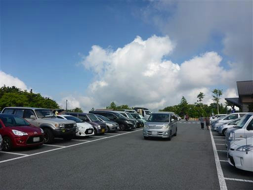
準備を整えて歩き始める。
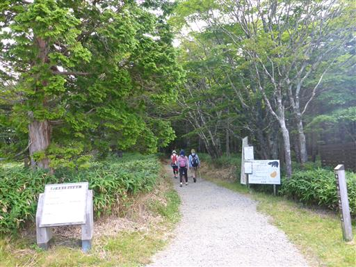
本日は祖父母と一緒。
しかし子供たちは道草を食うので、なかなか歩く速度が合わない。
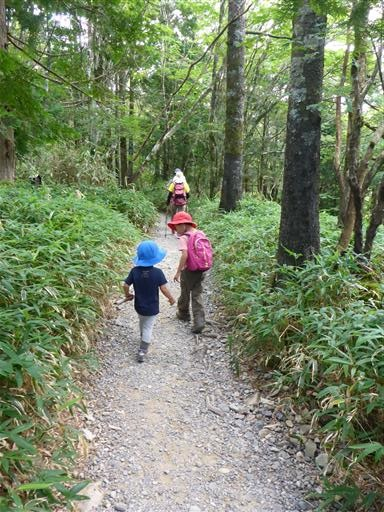
息子は早速棒を拾って遊んでいる。
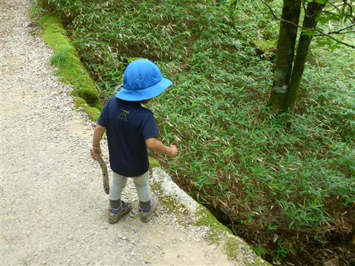
しばらくすると息子がぐずりだし、抱っこモード…
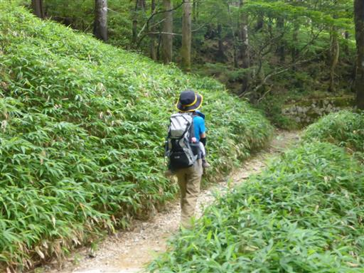
展望台に到着。雲に覆われて何も見えない。
大台ヶ原は極めて雨の多い場所で、きれいに晴れることは滅多にない。
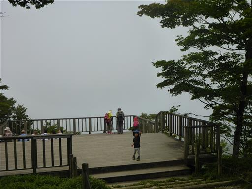
ここから山頂まであと少し。
下が見える階段は怖いようで、手をついて登っている。

大台ヶ原山の山頂に到着。標高1695m。
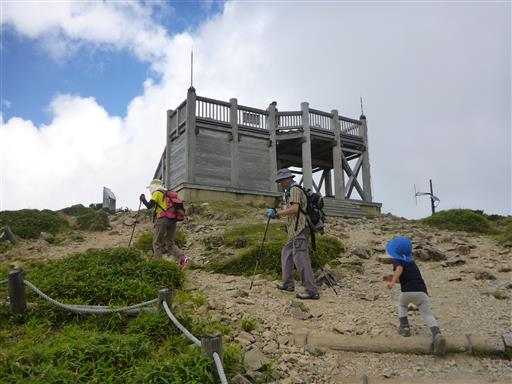
山頂にも展望台があるが、ここからも展望は無い。
まだ歩き始めたばかりだが、ここでおやつ休憩をとる。
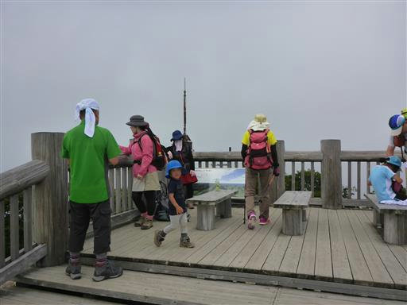
休憩をしたら下山開始。このまま駐車場に戻るのではなく、
ぐるっと大台ヶ原を一周するコースを歩く。
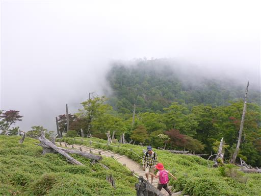
雲間から少し視界が広がる。
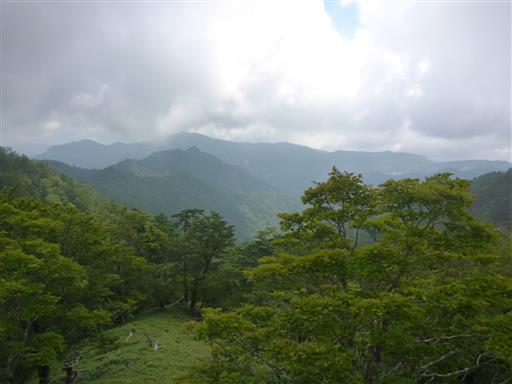
おやつを食べて元気になった息子は速足で歩く。
先ほどと一転して、今度は一人先行して歩いている。
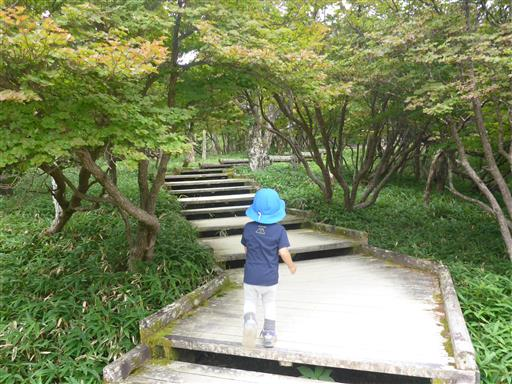
枯れ木の上に、子供の木が生えている。
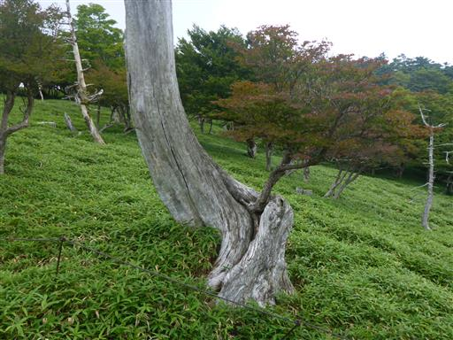
振り返ると大台ヶ原山の山頂部が見える。
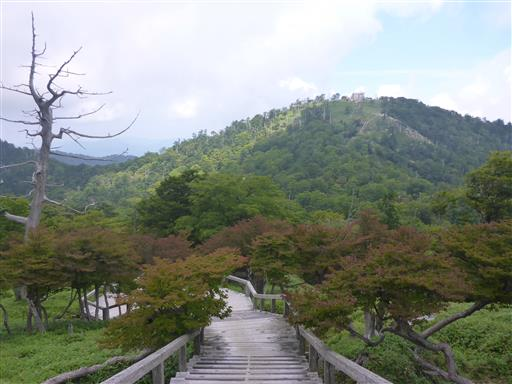
若干紅葉しているように見える。
まだ8月だが、こういう色の葉なのだろうか？
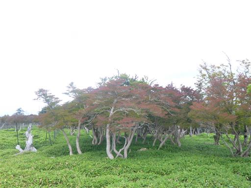
この辺りは笹原と枯れ木が点在している独特の風景だ。
伊勢湾台風の影響だが、その後、笹が繁茂し鹿が増えたことで、
森林が回復しないようだ。
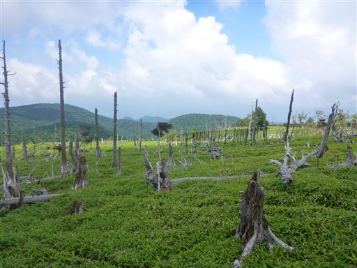
少し日が差してきた。
この辺りで息子がキリギリスを見つけ、娘と取り合いになる。
可哀そうなキリギリスは後ろ足が2つとも取れ、長い触角が曲がってしまった…
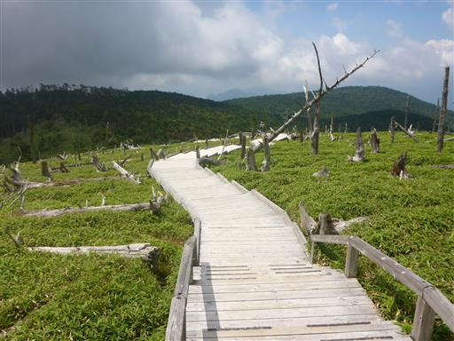
上が平たい変な形の木が立っている。
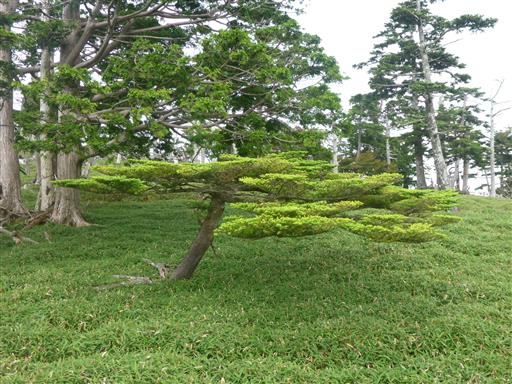
この辺りの森林は鬱蒼としている。昔は山全体がこのような森に覆われていたのだろう。
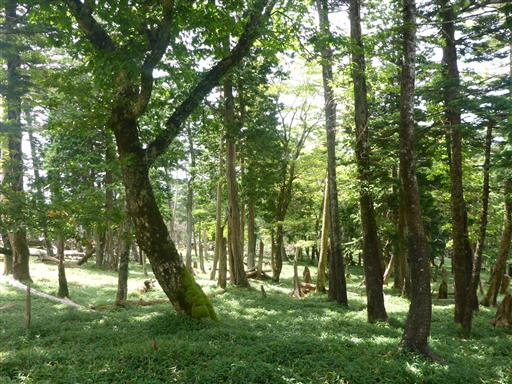
息子は祖母と手をつないでもらって、ご満悦で歩いている。
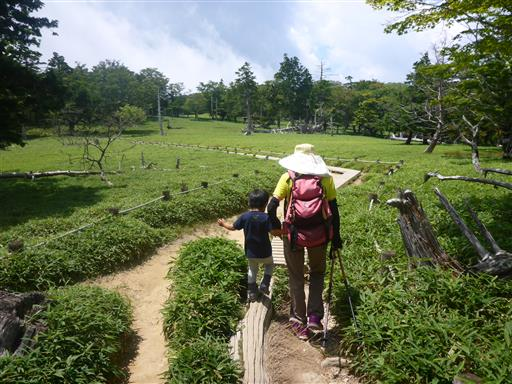
笹原に目立つ枯れ木が一本立っている。
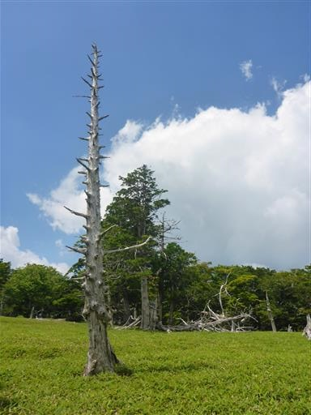
大台ヶ原の名所、大蛇嵓に向かう。すぐ側に巨大な岩壁が見える。
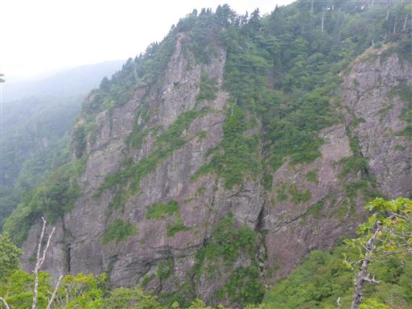
岩の先端の展望台まで歩いて行く。深い谷を挟んで対岸の尾根が聳えている。
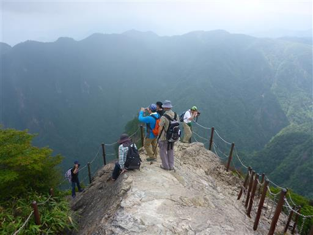
足元の鋭い痩せ尾根が眼下に落ちていく。
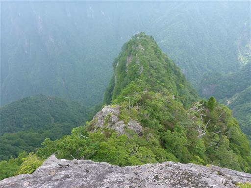
岩壁に囲まれた深い谷が続いている。大台ヶ原は渓谷美でもその名を知られている。
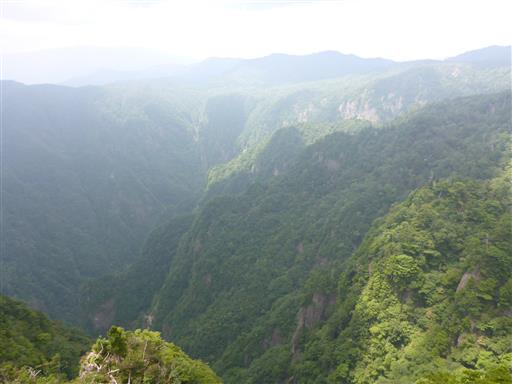
この辺りはシャクナゲが生い茂っている。ツクシシャクナゲとの標識がある。
紀伊半島以西に分布するシャクナゲだ。
息子はここまで頑張って歩いたので、ここでキャリアに乗せる。
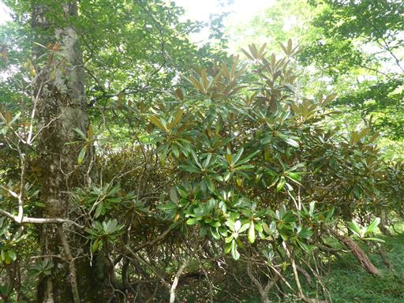
小さな岩場を越える。
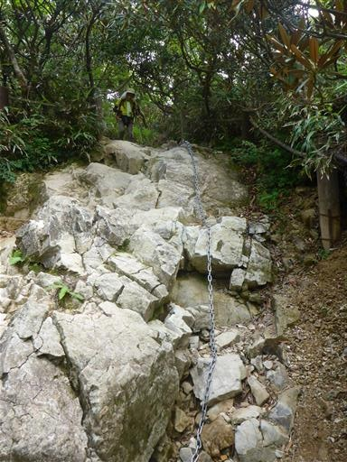
この辺りはシャクナゲのトンネルだ。

シオカラ谷の吊橋に到着。吊橋の下で再び休憩する。
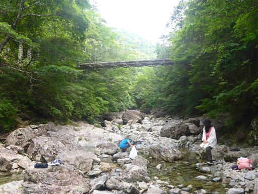
川にはオタマジャクシがたくさんいる。可愛い後ろ足が生えている。
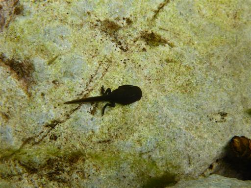
娘は早速オタマジャクシを捕まえて遊んでいる。
今年は散々オタマジャクシを捕まえて遊んだが、やっぱり楽しいようだ。
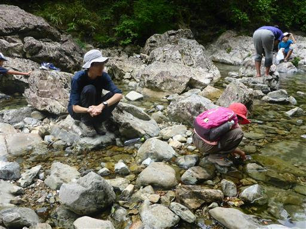
おやつ休憩を取ったら吊橋を渡って先に進む。
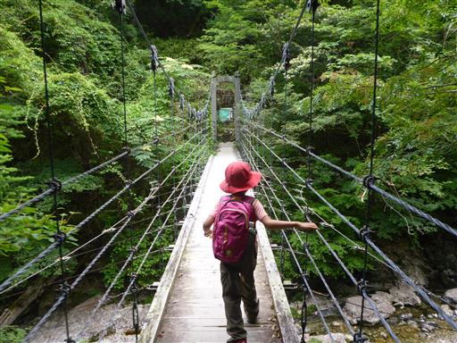
最後は急な登り坂が続くが、さほど長くはない。
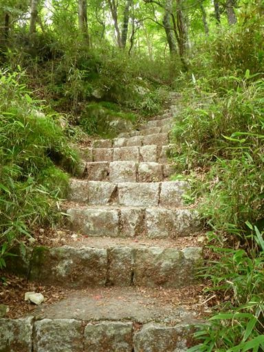
この辺りは美しい緑色の苔に覆われている。
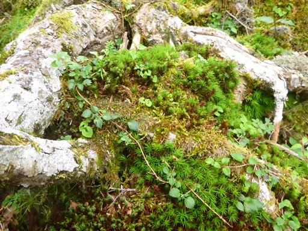
駐車場に戻ってくる。
久々に両親とのんびり登山を楽しむことができた。
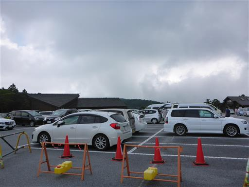